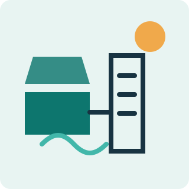
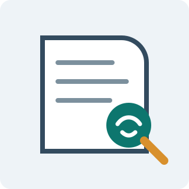
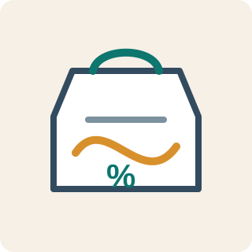
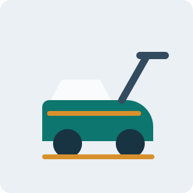

Bachelor's Degree in Mechanical Engineering
Mechanical engineering graduate with coursework and project experience across design, manufacturing, product development, and applied engineering analysis.
Mechanical Engineering Graduate
Engineering graduate focused on R&D, manufacturing systems, product design, and practical innovation across clean technology, safety, and sustainable production.
About Me
I am a Mechanical Engineering graduate with hands-on exposure to R&D, production, manufacturing processes, and multidisciplinary project work. My interests sit at the intersection of design, prototyping, sustainability, and practical systems that improve everyday safety and efficiency.
Education
Mechanical engineering graduate with coursework and project experience across design, manufacturing, product development, and applied engineering analysis.
Experience
Jarsh Safety
Nuclear Fuel Complex
Geekay Wires Pvt Ltd
Projects

A sustainability-focused system concept combining renewable energy with purification needs for healthier environments.

Research-oriented project studying conflict patterns and practical mitigation possibilities through field understanding.

Cost optimization model aimed at making sustainable biodegradable alternatives more feasible and competitive.

A mechanical design project focused on usability, fabrication, and efficient floor cleaning through simple mechanisms.
Leadership Roles
Guided research and development direction, collaboration, and idea execution.
Led student initiatives around digital manufacturing, learning, and community growth.
Achievements
Skills